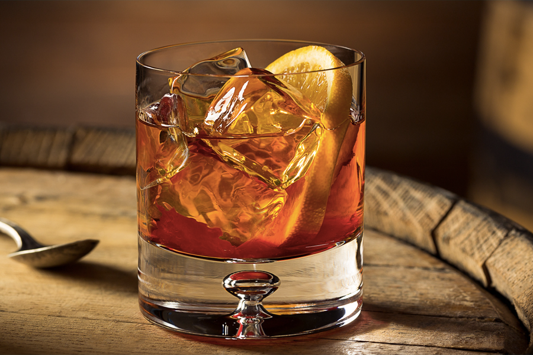

Old Fashioned

Description
The Old Fashioned is a classic cocktail for whiskey lovers.
Made with whiskey, sugar, and angostura bitters the Old Fashioned is a tale as old as time, one of the six basic drinks listed in David A. Embury's The Fine Art of Mixing Drinks.
Ingredients:
- 2 oz whiskey (bourbon or rye, as preferred)
- 1/2 oz simple syrup
- 2 dashes angostura bitters
- orange peel for garnish
Steps:
- Combine whiskey, simple syrup, and bitters in mixing glass
- Fill mixing glass with ice and stir for 10-15 seconds
- Strain cocktail into rocks glass over fresh ice
- Rim glass with orange peel, twist peel over glass and place twisted peel into the finished cocktail